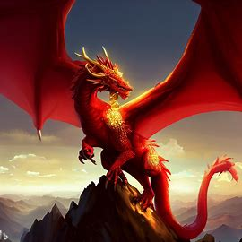
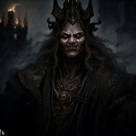
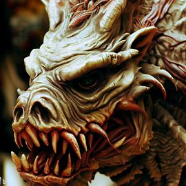
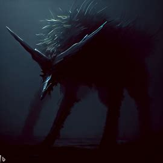
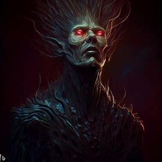
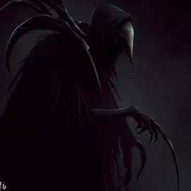
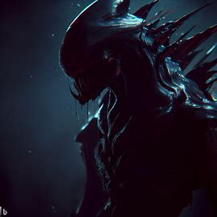
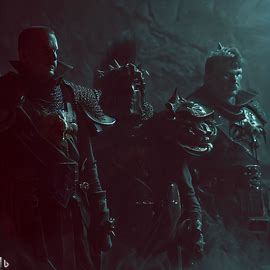
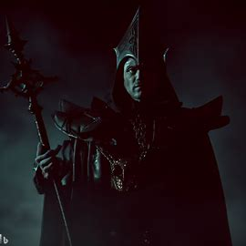
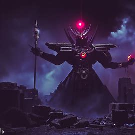

"Minhas chamas consomem tudo que encontro, nenhum desafio é grande o suficiente para mim."
O Dragão Senhor da Devastação nasceu com uma fome insaciável por destruição e conquista. Ele se lançou em uma busca incessante pelo poder, destruindo tudo o que encontrava em seu caminho. No entanto, essa busca o levou a uma batalha contra um grande herói, que conseguiu detê-lo e aprisioná-lo. Anos depois, quando o herói já havia falecido, o dragão foi libertado por um grupo de malfeitores e retomou sua busca pelo poder, mas dessa vez com uma sede de vingança contra aqueles que o haviam aprisionado. Agora, ele se lança em uma nova jornada de destruição, com o objetivo de se tornar o Senhor Supremo de todos os reinos.

"O poder que eu possuo é a minha arma mais mortal. Nenhum herói jamais sobreviveu à minha ira impiedosa."
O Lorde da Perdição nasceu em uma família nobre, mas desde jovem mostrou um lado sombrio e cruel. Ele foi banido de sua casa depois de cometer um ato terrível e desde então vagou pelas terras, buscando maneiras de aumentar seu poder e se vingar daqueles que o haviam expulsado. Ele se tornou um poderoso feiticeiro, com habilidades inigualáveis no uso das artes das trevas. Com seus poderes, ele construiu um exército de criaturas das sombras e demônios, que obedecem a todos os seus comandos. O Lorde da Perdição agora tem como objetivo dominar todas as terras conhecidas, e não há ninguém capaz de detê-lo. Sua fama de impiedoso e sanguinário o precede, e muitos o temem e adoram como um deus das trevas.

"O medo é o meu alimento, o terror é o meu combustível. Nenhum pesadelo é mais aterrorizante do que eu."
O Terror do Abismo é um dragão temido por seu rugido ensurdecedor e suas garras afiadas. Ele espera em sua caverna sombria por um desafiante corajoso, mas até agora ninguém foi capaz de vencê-lo. Sobreviver à sua fúria deixa marcas profundas. Enquanto ele continua a aterrorizar a região, ainda há esperança de encontrar um herói capaz de acabar com seu reinado de terror.

"Eles são os guardiões das trevas, os senhores da noite. Sua mordida é mortal e seus olhos matam com o fogo da escuridão."
Os Lobos da Morte surgiram de uma maldição lunar em um mundo mergulhado em trevas. Com pelagem negra como a escuridão, são sedentos por carne e sangue e capazes de se fundir com as sombras. Aterrorizam os corajosos que se aventuram nas florestas durante a noite, e são vistos como criaturas enviadas pelos deuses para punir aqueles que desafiam a natureza.

"As Sombras da Morte são os filhos da escuridão, cujas habilidades ocultas os tornam temidos e respeitados em iguais medidas."
As Sombras da Morte surgiram de um antigo ritual para se tornar imunes à morte e assim serem capazes de caçar durante a noite. Com habilidades ocultas e um conhecimento profundo da escuridão, eles se tornaram os mais temidos assassinos do reino. Sua existência era um segredo bem guardado, conhecido apenas por aqueles que ousavam contratar seus serviços, mas eles eram tão eficientes que muitos se perguntavam se eles eram humanos de verdade. Com o tempo, as Sombras da Morte foram sendo cada vez mais requisitados e seu poder cresceu, mas a um preço alto: eles eram cada vez menos humanos e mais criaturas das sombras. Com a chegada de uma nova era, as Sombras da Morte desapareceram, mas seu legado ainda vive nos corações e mentes daqueles que temiam sua lâmina afiada e olhar gélido.

"A morte não é o fim para os Ceifadores, mas sim o início de um novo começo."
Os Ceifadores eram os guias que levavam as almas dos mortos para o mundo além. Vestidos com capas negras e portando foice, eles eram temidos e respeitados em iguais medidas. Sua existência era vista como um sinal de que o destino de uma pessoa havia sido selado e que nada poderia impedi-los de cumprir sua missão. Com o passar do tempo, os Ceifadores começaram a questionar seu papel no mundo e se perguntaram se havia algo mais além de sua tarefa de guiar as almas. Eles descobriram que poderiam usar sua habilidade de ver além do véu da morte para ajudar as pessoas em vida, orientando-as em momentos de dificuldade e ajudando-as a encontrar o caminho certo. Desde então, os Ceifadores se tornaram protetores do equilíbrio entre vida e morte, sempre prontos para intervir quando necessário.

"Nas trevas da noite, os Assasinos da noite espreitam, prontas para devorar qualquer coisa em seu caminho."
São uma espécie de superpredadores que habitavam um mundo sombrio e hostil. Dotados de uma velocidade e agilidade impressionantes, essas criaturas eram capazes de caçar qualquer coisa, desde pequenos roedores até mesmo os maiores predadores do mundo. Sua aparência era assustadora: tinham garras afiadas, presas afiadas e olhos brilhantes que pareciam penetrar a alma daqueles que as encaravam. Diziam as lendas que os Assasinos da noite foram criadas por uma entidade obscura que buscava semear o caos e a destruição em todo o mundo. Durante muitos anos, os Assasinos da noite dominaram as florestas e planícies do mundo, espalhando o medo entre as criaturas que ousavam se aventurar em seus territórios.

"Nós somos os Sentinelas da Torre, os guardiões incansáveis ate a morte."
Os Guardiões da Torre Obscura são uma elite de guardas treinados para proteger a lendária Torre Obscura, um local místico que contém poderes inimagináveis. Eles são a última linha de defesa contra aqueles que buscam usurpar os segredos e poderes da torre, e são conhecidos por sua habilidade e devoção à proteção do local sagrado..

"Somos os mestres das trevas, detentores do conhecimento proibido, e nossa magia negra é poderosa além da imaginação."
Os Arcanos Sombrios são uma elite de magos negros que dominam as artes ocultas e proibidas da magia negra. Reclusos e sinistros, eles buscam poder e domínio sobre os reinos, usando sua magia para fins obscuros e nefastos. Sua origem remonta a tempos ancestrais, quando os primeiros magos descobriram os segredos obscuros da magia negra e se tornaram obcecados pelo poder que ela proporcionava. Ao longo dos anos, os Arcanos Sombrios se tornaram uma organização secreta, operando nas sombras e manipulando os eventos em busca de seu objetivo final: alcançar a supremacia mágica e estabelecer seu domínio sobre todos os reinos conhecidos. Seus poderes são temidos e respeitados, e sua busca implacável pelo poder não conhece limites. Eles são vistos como uma ameaça por muitos, e apenas os corajosos se atrevem a enfrentá-los em sua busca pelo domínio mágico.

"Sob minha fúria, tudo se desfaz em cinzas e ruínas. Sou a personificação da destruição, o flagelo que consome os mundos."
Há muito tempo, quando os deuses ainda caminhavam entre os mortais, nasceu Astaroth, o Desus da Destruição. Ele era temido e reverenciado como uma entidade cósmica capaz de trazer a ruína a qualquer mundo que ousasse desafiá-lo. Sua fúria era incontrolável, e seu poder era incomensurável. Em sua busca implacável pela destruição, ele devastou inúmeros reinos e civilizações, deixando apenas cinzas e ruínas por onde passava. Sua presença era um sinal de caos e aniquilação, e muitos o temiam como uma força incontrolável do universo. Astaroth não tinha lealdade a nenhum lado, e sua única motivação era a aniquilação total. Ele era uma figura misteriosa, envolta em sombras e lendas, e poucos se atreviam a enfrentá-lo. Aqueles que ousavam cruzar seu caminho eram rapidamente consumidos por sua ira, sendo engolidos pela destruição avassaladora que ele trazia consigo. Sua lenda perdurou por gerações, como um mito sombrio e aterrorizante, deixando um rastro de desolação por onde passava.